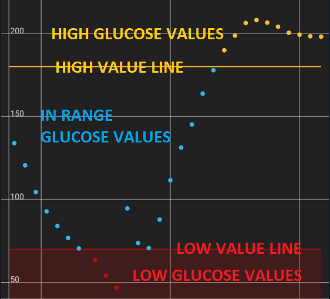
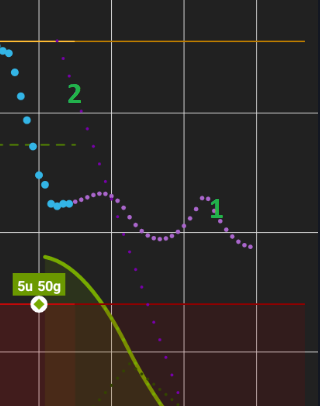
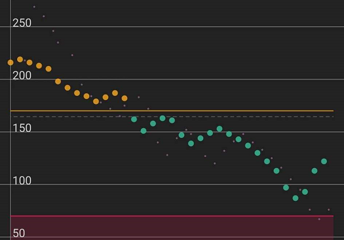
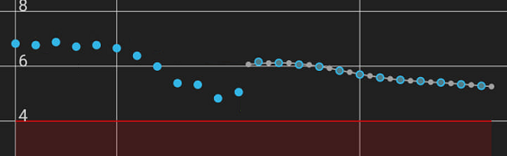

Display


This menu allows you to customize many visual aspect settings of xDrip+.
Note: Check Graph settings features before using Color settings.
Color Settings⌁
The example chart on top will show the effect of what you modify.
When modifying a color you can chose
- hue and saturation
- lightness/darkness
- transparency.
The result will show compared to the original color.
You can revert the color to default or save it.

Glucose values and lines⌁
You can customize the main BG plot. High and Low limits are defined in Glucose Units settings.
High, In-range and Low Values color will change the graph and limit lines on your main view, notification and widget charts.

Colors of BG readings and Trend Arrows⌁
You can also customize the current BG value and trend arrow color in respect with range limits.
Filtered values can be seen with sensors supporting raw data.
Treatments and predictions curves⌁
- Insulin on board (treatment main curve)
- Insulin activity (small dotted line)

- Glucose prediction (main prediction graph)
- Carbs on board (small dotted line)

Average and target lines⌁
- 8-Hour average line
- 24-Hour average line
- Target line
Annotations and dots⌁
Blood tests (also calibrations), and treatments.


Backgrounds⌁
Graphs backgrounds, main
Notifications⌁

Widget⌁
Plugins and features⌁
If you use a plugin you can also display the plugin glucose value as a secondary graph.
Plugin plot on graph must be enabled.

If you have steps and heart rate from a wearable device you can customize graphs colors.
In the example below 1. heart rate and 2. step counter.

Basal and SMB⌁
If you manage to display basal (from AAPS or manual setup) you can also customize the color.

SMBs are icons decluttering the graph for micro-bolus treatments.

Flair colors⌁
If you want to put some color on the top and bottom bars of your Android screen, enable flair colors.


Language⌁
By default xDrip+ will use your phone language. You can select another language for xDrip+ and force it to display instead of the phone language. For this: select the language in Choose a specific language, then toggle the Force language Text switch.
Smooth sensor noise⌁
Smoothing displays the smoothed curve, useful for noisy measurements.
You can also try Graph smoothing to clean your graph.


Show interface hints⌁
After you first installed xDrip+ you will see hints during first opening of some features, you can disable this behavior or reset it.

Graph Settings⌁
You can customize most of the items that will display on the main graph.
Graph smoothing⌁
Graph smoothing will apply a smoothing filter to the graph to make it easier to follow (less noise).
This is only a visual effect and doesn't impact readings.

Rewrite history⌁
Rewrite history will soften transitions after adding a new calibration to reduce the step like effect.
Make sure this is also enabled on followers to avoid different visualization of past BG values.
Widget range lines⌁
You can select to visualize high and low limit lines on the widget.

Main graph lines⌁
You can disable vertical time lines on the main graph.
You can disable horizontal glucose lines on the main graph.

Filtered data⌁
Filtered or smoothed plot adds another graph curve and will eventually add missing data.
For some data sources (like patched LL app) this will expose the unfiltered raw data as xDrip+ BG display is already filtered.
Raw data⌁
Raw data that can be displayed by xDrip+ if available.
G4, G5 and old G6 provide raw data.

Now raw data are mainly visible for Libre sensors.

Basal information⌁
If basal information is available from an external source (AAPS NSClient) it can be displayed by xDrip+.
In AAPS/NSClient config builder, xDrip+ Statusline, enable Show detailed IoB.
In xDrip+:
Settings - Less common settings - enable Extra status line, enable External status.
Settings - Inter-app - enable Accept treatments.
Enable Show basal TBR.
Basal information will also be uploaded to Tidepool.
Target and average lines⌁
You can visualize various reference lines on the graph:
- 8-Hour average line
- 24-Hour average line
- Target line
Libre trend⌁
Libre trend enables a small graph available in the three dots menu on the main view.
G6 predictions⌁
G6 prediction is a built-in feature of the G6 transmitter showing as small grey dots.

SMB⌁
SMBs are icons decluttering the graph for micro-bolus treatments. Touching the SMB gives the amount in insulin in the information line.

Display the Medtrum secondary sensor values.
Noise workings⌁
Additional noise calculation information, yellow line.
Backfilled data⌁
Backfilled data can be indicated with a different dot style.

Widget graph⌁
You can hide the graph on the widget and keep only the value.

These two options are only available for developers.

Customize Y axis range⌁
You can arbitrarily fix lower and upper value for the Y axis. Whenever readings will be out of this range, the graph will extend the range to make them visible. Y scale will then return to these settings when out of fixed range values are not displayed anymore.

Glucose number from Filtered⌁
Filtering might delay readings and is not recommended.
Filtering of 20 minutes is hardware coded for Patched Libre 2 app data source.
Bolus Wizard Preview⌁
BWP will show insulin on board (IoB) and suggest corrections based on the predictive parameters entered in xDrip+.
This is an indication. Make sure you understand the EULA before using it.
Never follow the suggestions when BG is fast changing.
If you force always show BWP it will always suggest a correction (insulin or carbs).

High Priority Notifications⌁
This will bring xDrip+ graph and notifications at the top of the list, disabling it brings it down.
Public Notifications⌁
This makes notifications visible on locked screen.
Parakeet and Extra Test Features⌁
You might have wanted to use these settings with a Parakeet.
Enable Reminder Features⌁
Enabled by default, you'll find reminders in the three dots menu top right on the main view.
Enable xDrip+ Accessibility⌁
xDrip+ can interface with Android accessibility if your phone supports it.

Numbered wall on Locked Screen⌁
xDrip+ can display your BG value on the phone locked screen.
Some features requires Android 7 and above.
This menu allows you to customize the number displayed.
- You will see a real time preview of the result (123 ⇅)
- Change the font size
- Change the vertical position (or vertical distance between numbers)
- Change the horizontal position (or horizontal distance between numbers)
- Change the number color
- Select the background image
- The actual numbered wall
Locked screen display can be enabled on Android 7+.
You can change the text and background color.
Enable and disable the feature for a defined period of the day.
Number Icon in Notification Area⌁
xDrip+ can display your BG number as an icon in the top left notification area and in the drop down notifications.

You should test the feature before using it as it might crash on some phones.

You phone will vibrate a few times during the test and you should see the BG icon 123 top left.

If this doesn't work it means you shouldn't enable the feature.
Once functionality is confirmed you can enable it.
You can also enable a large icon, with or without arrow in the notifications area.

Show xDrip on Boot⌁
This will make xDrip+ open automatically when your phone restarts.